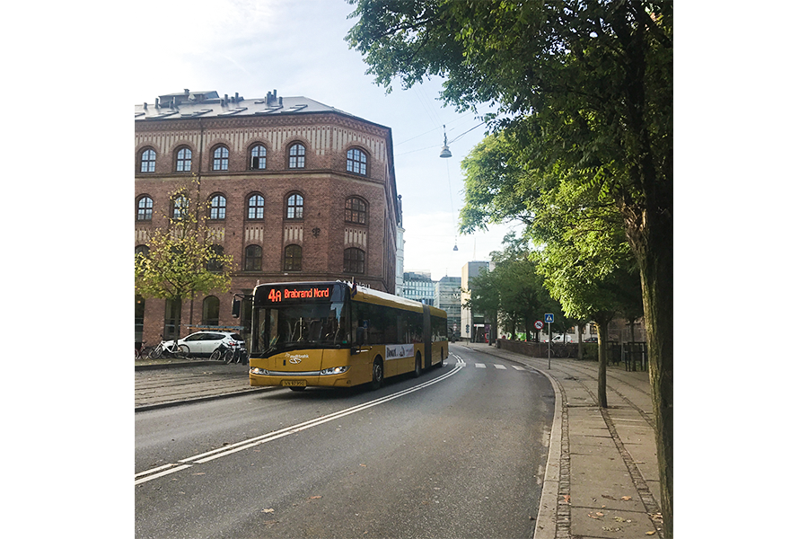

Sådan transporterer du dig rundt i smilets by
Hvis du absolut ikke vil cykle, så får du her guiden til at undgå at bruge for mange penge på transport i byen.
Er du ligesom mig lige flyttet til byen og utroligt forvirret over alle de muligheder, der er for at transportere sig rundt i byen? Jeg selv blev fortalt af andre studerende på min skole i Viby, at jeg skulle købe et rejsekort. Dette koster mig cirka 700 kr. i måneden, og er derfor en forholdsvis stor post i en studerendes sparsomme budget. Det skulle dog vise sig, at det langtfra var den mest optimale løsning for mit vedkommende. Derfor vil jeg nu guide dig gennem junglen af rejsekort, periodekort og andre eksotiske udtryk, der bliver brugt til at beskrive diverse transportmuligheder, så du undgår at bruge unødvendigt mange penge på netop dette.
- Rejsekort er til dig, som tager få og korte rejser i løbet af en måned. Selvom der bliver reklameret med, at des mere du bruger det, des billigere bliver det, bliver det aldrig lige så billigt som at rejse med periodekort.
- Periodekort er til dig, som ikke skal mere end 2-3 zoner i Århus. For mit vedkommende er dette klar den bedste løsning med en fast pris på 375 kr. i måneden.
- Ungdomskort er til dig, der skal rejse langt, og som udgangspunkt bruger mere end 625 kr. på transport i måneden og som falder inden for kategorierne; 16-19 år, elev på en ungdomsuddannelse eller studerende på en videregående.
Held og lykke med jobsøgningen – og mon ikke mandelmælk og blomkålspizza finder vej ind i dit køleskab, uden at sprænge budgettet, meget snart.
Når du har styr på det, vil jeg anbefale dig, at sætte dig ind i at bruge Rejseplanen, hvor du kan planlægge din rute bedst og hurtigst muligt.